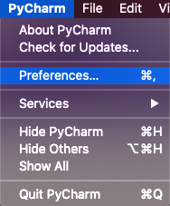

===安裝 Python 與環境變數設置===
- 請至 Python 網站安裝 Python 3.7. 若 Python 版本太新， 之後使用 Robot Framework 可能會產生版本相容性的問題。
- 成功下載下來之後請選擇 customize 自訂安裝並且勾選所有選項。記得要勾選 "add to path" 選項把 Python 加入環境變數。這樣系統在任何目錄下都可以找到 Python 這個執行檔囉！
- 既然我們要跑自動化當然也要安裝瀏覽器的驅動程式至 C槽。
- 請至電腦的 C槽 建一個新的資料夾命名為 “drivers”。
- 若要使用 Chrome 瀏覽器測試，請到網站 ChromeDriver 下載驅動程式。
** 若要使用其他瀏覽器請前往這個網頁查看相關資訊
** 必須注意的是。。。 下載驅動程式之前需要先查看電腦本身安裝的 Chrome 瀏覽器版本是什麼。比如說： 我目前安裝的瀏覽器版本是 80，那我需要安裝的 Chrome 驅動程式就會是 80.0.3987.106。 - 然後把下載下來的驅動程式拉到剛建立的 drivers 資料夾。
- 接著到系統環境變數設定的地方編輯 Path。確認以下的目錄已加入 Path 變數清單裡面，如果沒有請新增：
- C:\Python37
- C:\Python37\Scripts
- C:\drivers\chromedriver.exe
- 接下來可以打開電腦的 command prompt (按鍵盤的 Win + R 輸入 cmd 按 ok)
- 輸入指令 “python --version”。如果安裝成功就會顯示目前電腦安裝的python 版本。
===安裝 Robot Framework===
- 再次開啟 Command Prompt
- 輸入指令 ”pip install robotframework“ 安裝
- 輸入指令 ”pip install robotframework-seleniumlibrary“ 安裝
- 查看是否安裝成功可在 Command Prompt 輸入指令 “robot --version” 查看 robot framework 是否有顯示版本。若有就恭喜你，你已成功安裝！！
若需要安裝其他 Library 請至 pypi.python.org 網站查詢安裝指令。
===選擇與安裝開發環境===
開發環境的選擇有很多只需要看哪一個自己用的順手即可。以下是兩個我比較常用的：
- PyCharm
- 到 PyCharm 網站下載 Community 版本。
- 程式裡面打開偏好設定 （Preferences） 
- 偏好設定裡面打開 Editor > Plugins > 搜尋 ”IntelliBot“ 並安裝
- 再來到設定裡面打開 Editor > File Types 設置 Robot Feature > .robot 檔案類型。
- Visual Studio Code
- 到 Visual Studio Code 網站下載軟體。
- 成功之後打開軟體並安裝外掛 “Robot Framework Intellisense”。